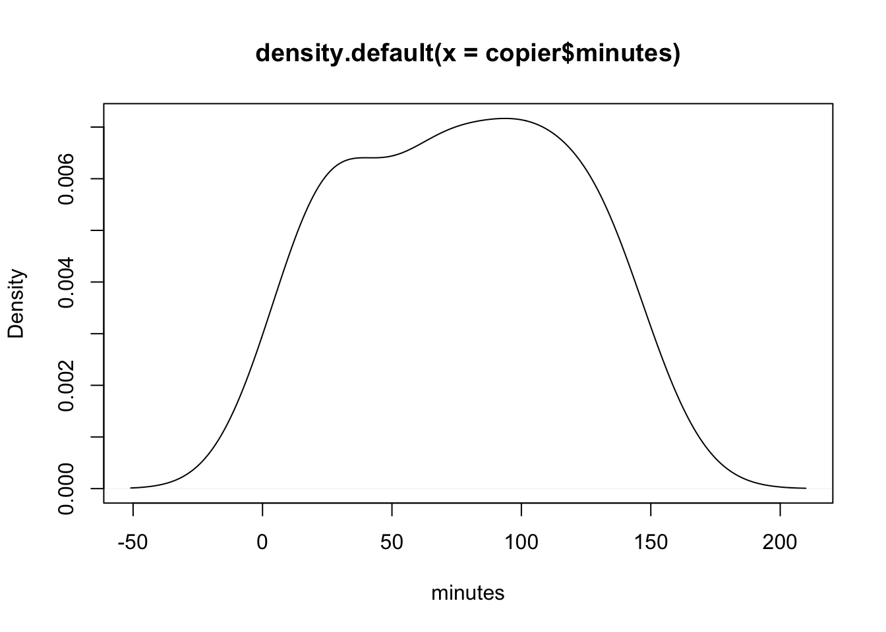

R basic plots and ggplot2
Donghyung Lee
2019-09-20
Last updated: 2019-09-20
Checks: 7 0
Knit directory: STA_463_563_Fall2019/
This reproducible R Markdown analysis was created with workflowr (version 1.4.0). The Checks tab describes the reproducibility checks that were applied when the results were created. The Past versions tab lists the development history.
Great! Since the R Markdown file has been committed to the Git repository, you know the exact version of the code that produced these results.
Great job! The global environment was empty. Objects defined in the global environment can affect the analysis in your R Markdown file in unknown ways. For reproduciblity it’s best to always run the code in an empty environment.
The command set.seed(20190905) was run prior to running the code in the R Markdown file. Setting a seed ensures that any results that rely on randomness, e.g. subsampling or permutations, are reproducible.
Great job! Recording the operating system, R version, and package versions is critical for reproducibility.
Nice! There were no cached chunks for this analysis, so you can be confident that you successfully produced the results during this run.
Great job! Using relative paths to the files within your workflowr project makes it easier to run your code on other machines.
Great! You are using Git for version control. Tracking code development and connecting the code version to the results is critical for reproducibility. The version displayed above was the version of the Git repository at the time these results were generated.
Note that you need to be careful to ensure that all relevant files for the analysis have been committed to Git prior to generating the results (you can use wflow_publish or wflow_git_commit). workflowr only checks the R Markdown file, but you know if there are other scripts or data files that it depends on. Below is the status of the Git repository when the results were generated:
Ignored files:
Ignored: .DS_Store
Ignored: .Rhistory
Ignored: .Rproj.user/
Untracked files:
Untracked: docs/figure/Rplot_ggplot2_prac.Rmd/
Unstaged changes:
Modified: analysis/lab2_inclass_prac.Rmd
Note that any generated files, e.g. HTML, png, CSS, etc., are not included in this status report because it is ok for generated content to have uncommitted changes.
These are the previous versions of the R Markdown and HTML files. If you’ve configured a remote Git repository (see ?wflow_git_remote), click on the hyperlinks in the table below to view them.
| File | Version | Author | Date | Message |
|---|---|---|---|---|
| Rmd | b824099 | dleelab | 2019-09-20 | created |
library(dplyr)
Attaching package: 'dplyr'The following objects are masked from 'package:stats':
filter, lagThe following objects are masked from 'package:base':
intersect, setdiff, setequal, unionlibrary(ggplot2)
icecream <- read.table("data/icecream.txt")
dim(icecream)[1] 200 5icecream$ice_cream <- as.factor(icecream$ice_cream)
copier <- read.table("data/CH01PR20.txt")
dim(copier)[1] 45 2colnames(copier)=c("minutes","number")
puzzle.summary <- icecream %>% group_by(ice_cream) %>% summarise(Mean=mean(puzzle),
Variance=var(puzzle))%>%as.data.frame()Graphical plots
- 1 variable: boxplots, histograms, etc.
- 2 variables: scatterplot
- more variables: scatterplot matrix
Traditional R plotting
Density plot, boxplot
plot(density(copier$minutes),xlab="minutes")#,ylab="density")
plot(density(icecream$puzzle),xlab="puzzle score")
boxplot(video~ice_cream, data=icecream)Scatter plot
plot(x=copier$number,y=copier$minutes)plot(puzzle~video, data=icecream)#response againt predictors
# by default, it's x axis first, then y axis. or you can specifyCorrelation matrix
head(iris) Sepal.Length Sepal.Width Petal.Length Petal.Width Species
1 5.1 3.5 1.4 0.2 setosa
2 4.9 3.0 1.4 0.2 setosa
3 4.7 3.2 1.3 0.2 setosa
4 4.6 3.1 1.5 0.2 setosa
5 5.0 3.6 1.4 0.2 setosa
6 5.4 3.9 1.7 0.4 setosacor(iris[,1:3]) Sepal.Length Sepal.Width Petal.Length
Sepal.Length 1.0000000 -0.1175698 0.8717538
Sepal.Width -0.1175698 1.0000000 -0.4284401
Petal.Length 0.8717538 -0.4284401 1.0000000pairs(iris[,1:3])
Advanced ploting - ggplot2
#install.packages("ggplot2")
library(ggplot2)Density plot
Run the first layer, then add extra layers, use + to add extra layers
p <- ggplot(data=copier, mapping=aes(x=minutes)) +
geom_density() +
xlab("Minutes used") +
ggtitle("This is a density plot of minutes") +
theme(plot.title = element_text(hjust = 0.5))
p
Add mean line(vertical line)
p + geom_vline(aes(xintercept=mean(minutes)),
color="red", linetype="dashed", size=2) #change dotted, or size A geom is the geometrical object that a plot uses to represent data. People often describe plots by the type of geom that the plot uses. For example, bar charts use bar geoms, line charts use line geoms, boxplots use boxplot geoms, and so on. Scatterplots break the trend; they use the point geom. As we see above, you can use different geoms to plot the same data.
Boxplot
p <- ggplot(icecream, aes(x=ice_cream, y=puzzle)) +
geom_boxplot()
pSimilar method
q <- ggplot(icecream) +
geom_boxplot(aes(x=ice_cream, y=puzzle) )
q
Add summary stats
q + geom_point(data=puzzle.summary,aes(x=ice_cream, y=Mean), shape=18, col="blue", size=3)p + stat_summary(fun.y=mean, geom="point", shape=7,col="red", size=4)
q + stat_summary(aes(x=ice_cream, y=puzzle),fun.y=mean, geom="point", shape=7,col="red", size=4)
#a little bit different, q don't have the aes settings, just different ways to do the calculation. Scatter plot - copier data
p <- ggplot(copier,aes(x=number, y=minutes)) +
geom_point()
p
Change theme
p + theme_bw()
p + theme_classic()
Scatter plot - icecream data
p <- ggplot(icecream,aes(x=video, y=puzzle, col=ice_cream,shape=ice_cream)) +
geom_point()
p
How about mark it by gender
icecream$female=as.factor(icecream$female)
p <- ggplot(icecream,aes(x=video, y=puzzle, col=female,shape=female)) +
geom_point()
p
p <- ggplot(icecream,aes(x=ice_cream, y=puzzle, col=female,shape=female)) +
geom_point()
pMany other ways to customize the plot
p <- ggplot(icecream, aes(x=ice_cream, y=puzzle,fill=ice_cream)) +
geom_boxplot()
p
p <- ggplot(icecream, aes(x=ice_cream, y=puzzle,fill=female)) +
geom_boxplot()
p
p+scale_fill_hue(l=70, c=80) #many other ways to change the color/theme/type, etc
sessionInfo()R version 3.6.1 (2019-07-05)
Platform: x86_64-apple-darwin15.6.0 (64-bit)
Running under: macOS Mojave 10.14.6
Matrix products: default
BLAS: /Library/Frameworks/R.framework/Versions/3.6/Resources/lib/libRblas.0.dylib
LAPACK: /Library/Frameworks/R.framework/Versions/3.6/Resources/lib/libRlapack.dylib
locale:
[1] en_US.UTF-8/en_US.UTF-8/en_US.UTF-8/C/en_US.UTF-8/en_US.UTF-8
attached base packages:
[1] stats graphics grDevices utils datasets methods base
other attached packages:
[1] ggplot2_3.2.1 dplyr_0.8.3
loaded via a namespace (and not attached):
[1] Rcpp_1.0.2 knitr_1.24 whisker_0.3-2 magrittr_1.5
[5] workflowr_1.4.0 munsell_0.5.0 tidyselect_0.2.5 colorspace_1.4-1
[9] R6_2.4.0 rlang_0.4.0 stringr_1.4.0 tools_3.6.1
[13] grid_3.6.1 gtable_0.3.0 xfun_0.9 withr_2.1.2
[17] git2r_0.26.1 htmltools_0.3.6 lazyeval_0.2.2 yaml_2.2.0
[21] rprojroot_1.3-2 digest_0.6.20 assertthat_0.2.1 tibble_2.1.3
[25] crayon_1.3.4 purrr_0.3.2 fs_1.3.1 glue_1.3.1
[29] evaluate_0.14 rmarkdown_1.15 labeling_0.3 stringi_1.4.3
[33] compiler_3.6.1 pillar_1.4.2 scales_1.0.0 backports_1.1.4
[37] pkgconfig_2.0.2